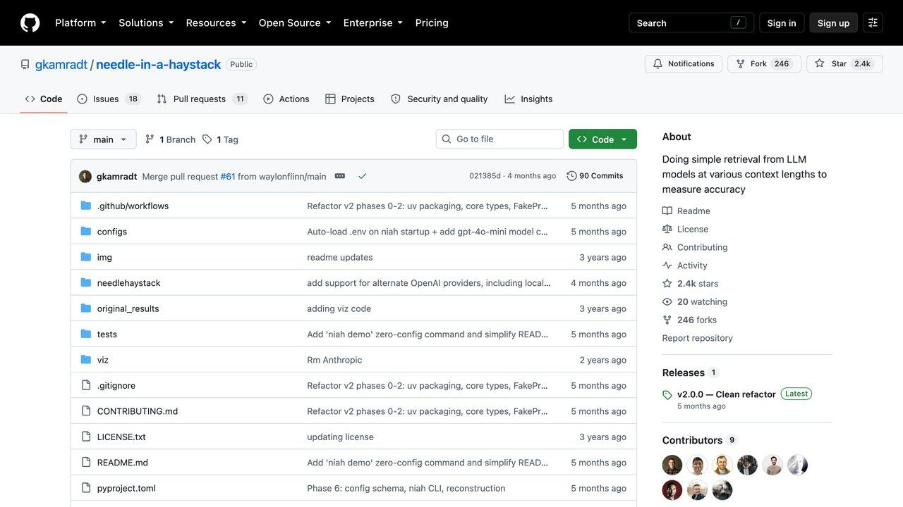

H ay una cosa que conviene entender antes que ninguna otra, porque explica casi todo lo demás: el modelo no recuerda vuestra conversación. No tiene un cajón donde guarde lo que le has ido contando. Cada vez que escribes un mensaje, la aplicación le vuelve a enviar la conversación entera desde el principio, como si fuera la primera vez, y el modelo la lee de nuevo completa para responder.
Esa ilusión de memoria funciona muy bien hasta que deja de funcionar. Y deja de funcionar por una razón mecánica: lo que se le puede reenviar tiene un tope. Ese tope es la ventana de contexto, y cuando la conversación no cabe, alguien tiene que decidir qué se queda fuera. Ese «alguien» no es el modelo: es la aplicación que estás usando. Lo que tú percibes como un olvido es, casi siempre, una decisión de recorte que no has visto.
Esta guía explica qué es exactamente ese límite, por qué el número que anuncian los fabricantes no es el que puedes aprovechar, en qué se diferencia de las funciones de «memoria» que han aparecido en ChatGPT y Claude, y qué hacer para que no te muerda. Si vienes de nuestra guía sobre cómo escribir un buen prompt, esto es la otra mitad del asunto: no solo importa qué le pides, sino cuánto lleva acumulado encima cuando se lo pides.
Qué es la ventana de contexto, sin metáforas
La ventana de contexto es la cantidad máxima de tokens que el modelo puede tener delante de una sola vez, contando lo que entra y lo que sale. Un token no es una palabra: es un trozo de texto, a veces una palabra corta entera, a veces un fragmento. Los modelos no leen letras ni palabras, leen esos trozos.
El detalle tiene consecuencias prácticas para quien escribe en español. Los tokenizadores de los modelos más extendidos se construyeron sobre textos mayoritariamente en inglés, así que parten peor otros idiomas: el mismo contenido en español se convierte en más tokens que en inglés. Las mediciones publicadas varían bastante según el modelo y el tipo de texto — del orden de un 10-25% más para expresar lo mismo, y más en casos concretos. No es razón para cambiar de idioma; sí es razón para no calcular tu presupuesto contando palabras y multiplicando a ojo.
Lo que mucha gente no tiene en la cabeza es todo lo que compite por ese espacio. No es solo tu pregunta:
Las instrucciones del sistema: lo que el fabricante o el desarrollador le ha puesto antes de que tú llegues. Tú no lo ves y no siempre es corto.
Toda la conversación anterior: tus mensajes y sus respuestas, incluidas las ramas que abandonaste y las correcciones. Nada de eso se borra solo.
Lo que hayas adjuntado: un PDF de cuarenta páginas no se «consulta», se mete dentro.
Los resultados de herramientas: si busca en la web, lee un archivo o llama a una API, lo que devuelva entra también. En un agente esto se come la ventana a una velocidad que sorprende.
Su propia respuesta: lo que va a escribir también cuenta contra el mismo total.
Por eso una conversación que empieza ágil se va volviendo espesa: cada turno arrastra todo lo anterior. Y por eso un agente que encadena diez pasos con herramientas llena la ventana muchísimo antes que un chat de diez mensajes escritos a mano. Si quieres el vocabulario completo, lo tienes ordenado en nuestro glosario de términos de IA.
Qué pasa exactamente cuando se llena
Aquí está el punto que casi nadie explica. Cuando la conversación no cabe, la aplicación tiene tres salidas, y cuál elija cambia por completo lo que tú notas.
Recortar lo más antiguo. Se van tirando los mensajes del principio para hacer sitio a los nuevos. Es lo más barato y lo más común. El síntoma es muy característico: lo que se olvida es siempre lo primero que dijiste — precisamente donde solemos poner las condiciones importantes.
Resumir lo acumulado. El sistema comprime la conversación anterior en un resumen y sigue a partir de ahí. Es menos brusco, pero un resumen es una pérdida de información con mejor presentación: suele sobrevivir el qué y desaparecer las condiciones, las excepciones y los matices que costaron veinte mensajes de negociación. El síntoma es distinto: no olvida un tema entero, lo recuerda mal y a grandes rasgos.
Negarse. Te devuelve un error de límite excedido. Es lo más honesto de los tres, porque al menos te enteras.
Pregúntale directamente por un detalle concreto que diste al principio, uno que no se pueda deducir del resto — un número, un nombre, una condición rara. Si lo reproduce exacto, sigue ahí. Si dice algo aproximado y plausible, estás leyendo un resumen. Si no tiene ni idea de que se habló del tema, te lo han recortado.
Merece la pena insistir en algo: cuando el modelo responde a partir de un resumen empobrecido, no te avisa de que le falta información. Rellena el hueco con lo que parece razonable. Ese mecanismo es uno de los caminos más habituales hacia las alucinaciones: no está inventando por capricho, está completando un contexto que alguien recortó por él.
El número del folleto no es el que usas
Los modelos punteros han convergido en ventanas del orden del millón de tokens, y algunos anuncian cifras mucho mayores. Suena a problema resuelto. No lo está, y esta es la parte que conviene tener clara antes de diseñar nada encima.
Que quepa no significa que se use bien. Hay dos hallazgos bien documentados que apuntan en la misma dirección, y ninguno viene de un fabricante vendiendo lo contrario.
El primero es «lost in the middle», de un trabajo de Nelson F. Liu y coautores (Stanford, UC Berkeley y Samaya AI), publicado en la revista TACL. Colocaron la información que contenía la respuesta en distintas posiciones dentro de un contexto largo y midieron el acierto. El resultado: la precisión es mejor cuando lo relevante está al principio o al final, y cae de forma apreciable cuando está en el medio. Y les pasaba también a los modelos vendidos específicamente como de contexto largo. Dicho de otro modo, el interior de la ventana es terreno menos fiable que los extremos.
El segundo es el informe Context Rot de Chroma, que evaluó 18 modelos punteros — entre ellos versiones de GPT, Claude, Gemini y Qwen — con variantes de la prueba de la aguja en el pajar, una tarea conversacional de preguntas y respuestas y otra sintética de repetir palabras. La conclusión es contundente: todos empeoraban al crecer la entrada, y no de forma proporcionada ni predecible. Incluso en tareas triviales de copiar y recuperar. La degradación empieza mucho antes de tocar el límite, así que no es el error de «se ha llenado»: es un deterioro progresivo que no da ningún aviso.
De ese mismo informe sale un detalle que va contra la intuición y que vale la pena guardarse: los modelos rindieron mejor con pajares desordenados que con documentos coherentes y bien hilados. Que el texto de alrededor tenga sentido y hable del mismo asunto no ayuda — despista, porque hay más material que se parece a la respuesta sin serlo.
Podríamos listar cuántos tokens admite hoy cada modelo, pero esas cifras cambian cada pocas semanas, los fabricantes no siempre miden igual y el propio argumento de esta sección es que el número anunciado no predice lo que vas a poder aprovechar. Consulta la documentación oficial del modelo que uses para el dato del día, y trátalo como un techo, no como un presupuesto de trabajo.
La conclusión práctica es incómoda para quien esperaba que las ventanas gigantes hicieran innecesario pensar: meter más no es gratis, ni siquiera cuando cabe. Cada bloque de relleno que añades entre tu pregunta y el dato que importa reduce la probabilidad de que el modelo lo use bien.

Memoria y contexto no son lo mismo
Las funciones de memoria que han ido apareciendo en los asistentes se confunden mucho con la ventana de contexto, y son cosas distintas. La ventana es lo que el modelo tiene delante ahora. La memoria es un almacén que vive fuera de la conversación y del que se van sacando trozos para meterlos dentro.
Según la documentación de Anthropic, Claude resume las conversaciones y elabora una síntesis de lo relevante que se actualiza de forma periódica —cada 24 horas— y que sirve de contexto en las conversaciones nuevas; dentro de un proyecto, además, cada proyecto tiene su propio espacio de memoria separado, para que no se mezcle el contexto de unos con el de otros. Para quien programa, existe también una herramienta de memoria con la que el modelo guarda notas en archivos y las vuelve a leer en sesiones posteriores. ChatGPT tiene su propio sistema equivalente, que mantiene un perfil que atraviesa todas tus conversaciones.
Los detalles concretos cambian con cada actualización, pero hay dos límites estructurales que no cambian y que importan más que la ficha de funciones:
Guarda una síntesis, no una transcripción. Reescribe y generaliza: se queda con que prefieres respuestas cortas, no con la cifra exacta que le dictaste hace tres semanas. Para preferencias y forma de trabajar va bien; para datos precisos, no te fíes — eso se vuelve a pegar.
Termina dentro de la misma ventana. Lo que la memoria inyecta ocupa espacio y compite con el resto. No amplía el límite: lo consume, a cambio de ahorrarte repetirte.
Y hay dos consecuencias que conviene no pasar por alto. La primera es de privacidad: un sistema que decide solo qué merece la pena recordar de lo que le cuentas acumula un perfil tuyo con el tiempo, así que toca saber qué guarda y cómo se borra — lo tratamos en cómo proteger tus datos al conectar la IA. La segunda es de seguridad: todo lo que la memoria inyecta entra en la ventana con el mismo estatus que tus instrucciones, así que una nota envenenada en su día se puede arrastrar a conversaciones futuras. Es la misma mecánica que explicamos en la guía de inyección de prompts, con el agravante de que persiste.
Qué hacer en la práctica
Si usas un chat normal
Abre conversaciones nuevas más a menudo de lo que crees. La intuición dice que un chat largo «sabe más». En realidad acumula callejones sin salida, pruebas descartadas y correcciones que siguen ocupando sitio y compitiendo por su atención. Cuando cambias de tarea, empieza de cero y pégale solo las conclusiones que necesites arrastrar. Y si lo que quieres es que ese contexto no haya que pegarlo cada vez, la pieza que falta no es más memoria: son archivos que el asistente consulte cuando toca — está desarrollado en construir tu propio asistente personal con IA.
Pon lo crítico al final, no solo al principio. Es la aplicación directa del «lost in the middle». Si hay una restricción que no se puede saltar, repítela en el último mensaje en lugar de dar por hecho que sigue vigente desde hace cuarenta turnos.
No adjuntes de más «por si acaso». Cinco documentos cuando el bueno es uno es exactamente la receta del deterioro: relleno temáticamente parecido alrededor del dato que importa.
Haz que te resuma el estado y corrige el resumen. Antes de una fase larga, pídele que resuma en qué estáis y qué reglas aplican. Si algo falta o está mal, lo corriges — y con eso estás reescribiendo el contexto a mano en lugar de dejar que lo comprima como quiera. Es el truco más rentable de toda esta lista.
Si lo montas tú, con API o con un agente
Mide los tokens, no los estimes. Los proveedores dan contadores y las respuestas de la API informan del uso real. Con textos en español la estimación a ojo se queda corta con bastante frecuencia, y esa diferencia se paga: lo que cuesta cada tramo de tarifa y dónde están los escalones, en cuánto cuesta de verdad usar la IA por API. Si además te preocupa lo que cuesta, tenemos una calculadora de coste de API para hacer el cálculo antes de montarlo.
Recupera en vez de rellenar. Ante un corpus grande, la respuesta no es una ventana más grande: es traer solo los fragmentos pertinentes. Eso es exactamente para lo que sirve RAG, y esta es la razón de fondo por la que sigue teniendo sentido aunque las ventanas hayan crecido tanto: no es un truco para ahorrar, es que menos relleno da mejores respuestas.
Repite la instrucción al final de una entrada larga. Si metes un documento de 50.000 tokens, pon la tarea antes y vuelve a enunciarla después. Cuesta unas decenas de tokens y compensa.
Comprime a propósito, no por accidente. Si la sesión va a ser larga, decide tú qué se conserva: un resumen con estructura fija —decisiones tomadas, restricciones activas, estado actual— aguanta mucho mejor que dejar que el sistema recorte por antigüedad.
Prueba con longitudes reales. Esto es lo que más se salta y lo que más caro sale. Como la degradación no es proporcional, que funcione con 2.000 tokens no dice nada de cómo irá con 200.000. Si tu agente va a trabajar con entradas largas, tus pruebas tienen que ser largas. Va en la misma línea que los errores habituales al automatizar con IA: validar en pequeño y desplegar en grande.
Hay una salida más que conviene conocer aunque no siempre compense: repartir las lecturas entre varios subagentes, cada uno con su propia ventana limpia, y quedarse solo con lo que devuelvan. Funciona, pero sale caro y trae sus propios fallos — el cálculo completo está en cuándo usar varios agentes de IA en vez de uno.
Compruébalo tú en diez minutos
No hace falta fiarse de nadie. Puedes reproducir el efecto a pequeña escala con el asistente que ya usas.
Coge un texto largo y aburrido del que no te importe nada — un reglamento, unas condiciones, cualquier documento denso. Inserta en él una frase concreta e inventada, algo que no se pueda deducir del contexto: El código interno del expediente es MALVA-7731. Pega el texto y pregunta al final cuál es el código interno.
Ahora repítelo tres veces cambiando solo una cosa: la frase al principio del texto, la frase justo en la mitad, y la frase al final. Usa una conversación nueva cada vez, porque si no la respuesta anterior ya está en el contexto y contaminas la prueba. Luego alarga el texto al doble y vuelve a hacer las tres.
Lo normal es que con textos cortos acierte siempre y que, al alargar, la posición del medio sea la primera en fallar. Conviene decir qué es y qué no es esto: son cuatro pruebas en una tarde, no un benchmark — para eso están los trabajos citados arriba, con cientos de ejecuciones controladas. Pero sirve para lo que importa: dejar de tratar la ventana de contexto como un cajón donde todo vale igual, y empezar a tratarla como un sitio donde la colocación importa.
5 comandos de Claude Code para cuidar la memoria
Cuanto más larga es una conversación, más contexto lee Claude en cada respuesta y más uso gastas. Claude Code trae comandos integrados para controlarlo. Todos aparecen en su documentación oficial.
/context: muestra el uso del contexto como una cuadrícula de colores, con sugerencias para liberar espacio y avisos de capacidad./compact: resume la conversación hasta ese momento para liberar espacio. Puedes añadir instrucciones, por ejemplo/compact céntrate en los cambios del formulario./rewind: vuelve la conversación y/o el código a un punto anterior. Es mejor que gastar varios mensajes corrigiendo un error./clear: empieza una conversación nueva con el contexto vacío. Úsalo al cambiar de tarea; puedes recuperar la anterior con/resume./usage: enseña el coste de la sesión, los límites de tu plan y estadísticas de uso (también responde a/cost).
Un hábito que funciona: mira /context de vez en cuando, compacta cuando la conversación se alarga y limpia al empezar algo distinto.
Lo honesto: los comandos son gratis, pero Claude Code necesita un plan de pago de Claude o una cuenta de API.
Documentación: code.claude.com/docs/en/commands